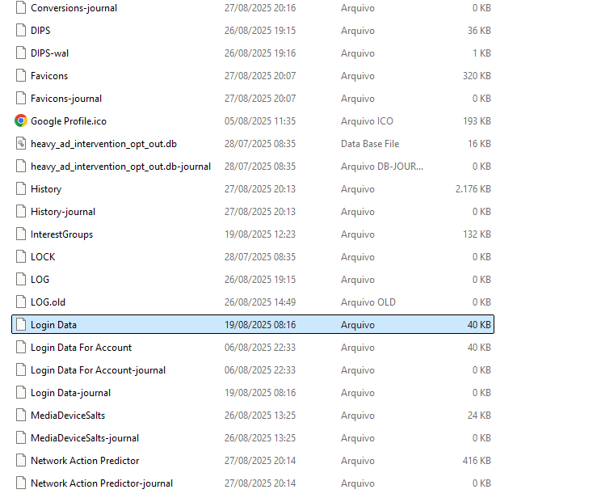

O que são browsers?
Browsers, popularmente conhecidos como navegadores de internet, são ferramentas essenciais para acessar a Web. Essa aplicação tem duas funções centrais: localizar conteúdos disponíveis na rede e exibir essas informações de forma acessível ao usuário. Com o crescimento da internet e a constante evolução das tecnologias digitais, os browsers deixaram de ser apenas "leitores de páginas" e passaram a incorporar diversas funcionalidades adicionais, como gerenciamento de senhas, sincronização entre dispositivos e suporte a extensões — tudo com o objetivo de tornar a navegação mais prática, fluida e personalizada.
Entre essas inovações, destaca-se o cofre de senhas, um recurso que armazena e gerencia credenciais de acesso a diversas páginas web, eliminando a necessidade de memorizar várias senhas e promovendo uma navegação simplificada e transparente.
Como os browsers armazenam credenciais?
Os navegadores modernos funcionam como clientes em uma arquitetura cliente-servidor. Nesse modelo, diversos tipos de dados gerados durante a navegação — como histórico de páginas acessadas, cookies, favoritos e credenciais de login — são armazenados localmente no dispositivo do usuário. Para isso, muitos navegadores utilizam bancos de dados leves e eficientes, sendo o SQLite uma das tecnologias mais comuns para essa finalidade.
O Microsoft Edge é o browser padrão do sistema operacional Windows desde 2015. No entanto, em 2020 ele foi reconstruído com base no projeto Chromium, que é de código aberto. Nele, as credenciais de login salvas pelo usuário são armazenadas em um banco de dados SQLite localizado no sistema de arquivos do dispositivo. Esse banco contém informações como nomes de usuário, senhas, URLs associadas e datas de criação.
Entretanto, para garantir a segurança e a privacidade do usuário, as senhas não são armazenadas em texto simples (plain text). O navegador utiliza mecanismos de criptografia fornecidos pelo sistema operacional para proteger esses dados. Por exemplo:
- No Windows, é usada a API Windows Data Protection API (DPAPI) para criptografar e descriptografar as senhas.
- No macOS, o navegador utiliza o Keychain, o sistema nativo de gerenciamento de senhas da Apple.
- No Linux, o Chrome pode utilizar soluções como o GNOME Keyring ou o KWallet, dependendo do ambiente de desktop.
Além disso, os navegadores oferecem mecanismos de sincronização, permitindo que as credenciais sejam compartilhadas com segurança entre diferentes dispositivos conectados à mesma conta (como a Conta Google, no caso do Chrome). Essa sincronização é criptografada de ponta a ponta, garantindo que apenas o usuário consiga acessar suas informações.
Dito isso, vamos fazer uma análise prática dessa feature que “facilita” e automatiza o processo de login, a fim de verificar a segurança (ou a falta dela) dessa prática. Essa análise foi realizada no sistema operacional Windows 11, utilizando o Edge como browser; contudo, essa sistemática se aplica à grande parte dos navegadores.
Ao digitar as credenciais de acesso a um site, o browser perguntará se deseja salvá-las:

Caso o usuário escolha salvar, esses dados serão gravados em uma base de dados SQLite denominada "Login Data", localizada na pasta "%USERPROFILE%\AppData\Local\Microsoft\Edge\User Data\Default" do usuário corrente. No entanto, conforme dito acima, a senha é guardada como um blob criptografado por uma chave simétrica forte (ex: SHA-256). Na imagem abaixo podemos ver a base de dados, que pode ser aberta por um gerenciador de SQLite.

A chave-mestra utilizada para cifrar a senha é obtida com base nos dados do usuário logado. Essa chave é criptografada por meio da DPAPI, que é uma API interna do Windows que permite a desenvolvedores e softwares criptografar e descriptografar dados sem a necessidade de gerenciar complexas chaves criptográficas. Isto é, o processo de escolha da chave é abstraído por meio de uma derivação de dados do usuário ou do computador.
Dito isso, a chave-mestra criptografada pode ser encontrada em "%USERPROFILE%\AppData\Local\Microsoft\Edge\User Data", no arquivo denominado "Local State", criptografada pela DPAPI do Windows, conforme imagem abaixo:

Assim, com base na chave-mestra cifrada pela DPAPI, é possível fazer o processo inverso e obter a senha em texto claro. Isto é, utilizando a função CryptUnprotectData da DPAPI e informando a "encrypted_key" localizada no arquivo "Local State", é possível obter a chave-mestra em texto plano. Logo, com a posse dela, é possível decriptar o conteúdo da base SQLite, independentemente da força do algoritmo usado. Portanto, mesmo que as primitivas criptográficas sejam fortes, com a posse da chave-mestra é possível decriptar o conteúdo cifrado com a chave simétrica e obter a credencial salva no navegador.

Assim, podemos resumir que, apesar de utilizar algoritmos de criptografia robustos, existe um problema no fato de a chave-mestra não ser definida e guardada pelo usuário, mas sim baseada em dados do dispositivo/usuário que ficam armazenados localmente. Dessa forma, infoestealers se utilizam dessa fragilidade (ou obscuridade) para furtar dados relacionados a credenciais salvas em browsers.
Como guardar de maneira segura?
Como visto acima, o modelo padrão (deixar o browser abstrair o processo de definição da chave-mestra) que salva as credenciais apresenta uma fragilidade que pode comprometer as senhas armazenadas. Contudo, alguns browsers permitem que o usuário defina a chave-mestra manualmente. Assim, a segurança das senhas salvas dependerá da definição de uma chave-mestra forte. Nesse sentido, é indicado usar chaves longas, uma vez que a força de uma credencial está relacionada à combinação de caracteres possíveis. Isto é, uma senha numérica de 4 caracteres tem 10x10x10x10 = 10.000 possibilidades. Destarte, ao adicionar letras maiúsculas, minúsculas, caracteres especiais e números, as possibilidades aumentam e a quantidade de combinações cresce exponencialmente.
Uma alternativa mais robusta é utilizar cofres de senhas dedicados, como KeePassXC, Bitwarden, 1Password ou outro de sua preferência.
- KeePassXC: Software de código aberto que armazena suas senhas localmente e permite gerenciar as credenciais de forma segura.
- Bitwarden: Oferece opções gratuitas e pagas, com armazenamento na nuvem, e é altamente recomendado por sua simplicidade e segurança.
- 1Password: Uma opção voltada para quem procura recursos avançados, como compartilhamento de senhas e auditorias de segurança.
Além disso, essas soluções específicas provêm mais flexibilidade para definir o algoritmo criptográfico utilizado e para gerenciar a integração com o browser. Não obstante, algumas oferecem proteções extras, como impedir que screen loggers capturem as credenciais por meio de capturas de tela.
A autenticação multifator (MFA) é uma das formas mais eficazes de aumentar a segurança. Ao ativá-la em suas contas, você adiciona uma camada extra de proteção além da senha. Mesmo que sua senha seja comprometida, o acesso à conta ainda requer um segundo fator, como um código enviado por push, TOTP ou gerado por um aplicativo de autenticação (Google Authenticator, Authy, etc.). No entanto, o 2FA não é uma solução infalível. Já existem ataques de engenharia social capazes de contornar essa proteção, mas isso é assunto para outro post...